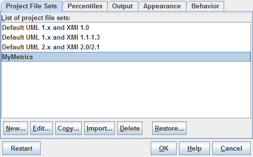

| Prev - Next - Down | SDMetrics - the UML design measurement tool |
When SDMetrics analyzes an XMI file, it retrieves the XMI version from the file, as well as the name and version of the XMI exporter that created the file. SDMetrics then selects from the list of available project file sets the one that best matches the specification of the XMI file at hand.
If you downloaded updated project files from the SDMetrics web site www.sdmetrics.com, or wrote your own project files, and want to use these files by default, you can define new project file sets or change the existing ones. That way, you do not have to specify your custom project files over and over again in the project settings dialog.
Open the preferences dialog and select the tab sheet "Project File Sets":

Figure 25: Project File Set Preferences
The tab sheet shows a list of all available project file sets. You can add, modify, copy, import, and delete entries from the list.
| Prev | Up | Next |
| Section 4.16 "Setting Preferences" | Contents | Section 4.16.1.1 "Adding New Project File Sets" |